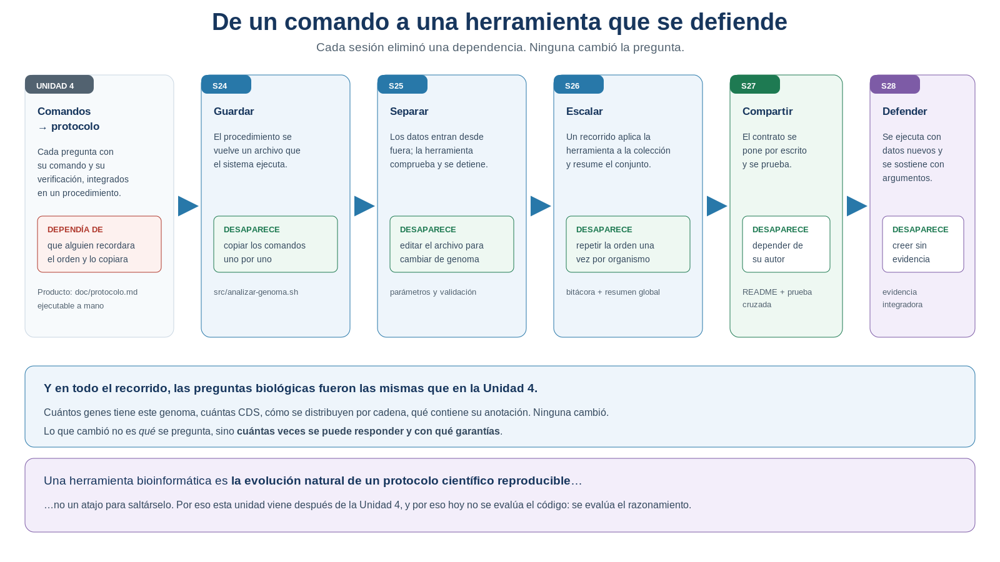
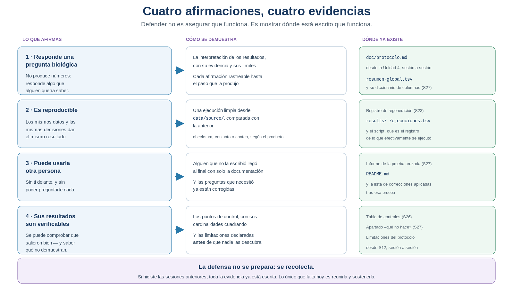
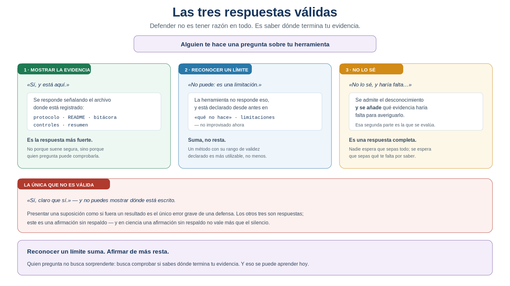
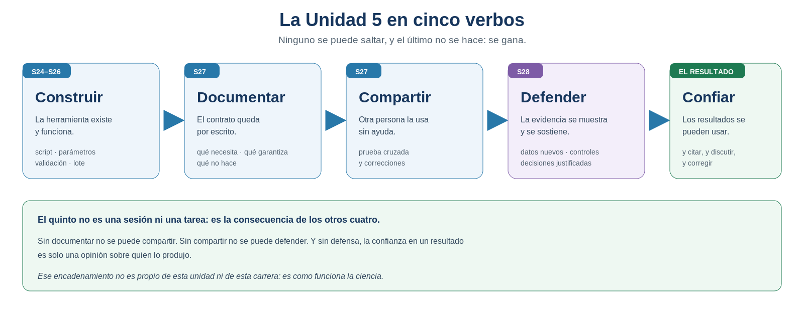

S28 — Defender: demostrar que una herramienta bioinformática es reproducible
Esta sesión no es un examen. Es la defensa de un proyecto. Antes de clase reunirás la evidencia que ya produjiste a lo largo de la unidad y prepararás cómo la vas a sostener. Durante el taller ejecutarás tu herramienta con datos que no has visto, un compañero la ejecutará por su cuenta, y responderás preguntas sobre lo que hiciste y por qué. Después escribirás la reflexión final y cerrarás el protocolo.
Es la evidencia integradora de la Unidad 5, y sustituye al examen práctico.
Ficha del módulo
| Elemento | Descripción |
|---|---|
| Sesión | S28, 2 horas |
| Unidad | U5. Automatización de análisis bioinformáticos con Shell — sesión de cierre |
| Competencias | A–G: todas las del curso convergen aquí |
| Propósito | Presentar, ejecutar, justificar y defender la herramienta desarrollada en la unidad, demostrando que reproduce un análisis completo de forma transparente |
| Consulta previa del Plan | El pipeline y la documentación desarrollados durante U5 |
| Continuidad | S27 dejó una herramienta que otra persona puede usar; S28 exige que tú puedas sostenerla |
| Lectura indispensable | Secciones 1–6 de este módulo (~40 min) |
| Lectura de consulta | Sección 7; tu propio doc/protocolo.md, entero, de la Unidad 1 hasta hoy |
| Primer intento | Prácticas 1 y 2: auditoría de la evidencia y guion de la defensa, 60 min |
| Evidencia integradora | Herramienta reutilizable + README + reporte + presentación + declaración de uso de IA |
| Evaluación | Con calificación. Sustituye al examen práctico 2 |
No se evalúa que recuerdes la sintaxis de un comando, ni que tu script sea elegante, ni siquiera que produzca una salida bonita. Se evalúa que puedas demostrar cuatro cosas: que tu herramienta responde una pregunta biológica, que es reproducible, que otra persona puede usarla y que sus resultados son verificables. Todo lo demás es secundario.
Relación con lo que ya sabes
S27 S28
Otra persona puede usarla → Y tú puedes sostener cada decisión
"aquí está la documentación" "aquí está la evidencia, y esto es lo que no demuestra"S27 terminó con una pregunta y un encargo. La pregunta: «¿puedes tú defender cada decisión que hay dentro de ella?». El encargo: leer tu protocolo entero, de la Unidad 1 hasta hoy. Si lo hiciste, habrás visto lo que esta sesión quiere hacer explícito.
| Lo que traes | De dónde | Qué papel juega hoy |
|---|---|---|
| El protocolo completo | Desde U1, sesión a sesión | Es el cuaderno de laboratorio: la fuente de casi toda tu evidencia |
| La herramienta y su lote | S24–S26 | Se ejecuta hoy, con datos nuevos |
El README y el diccionario |
S27 | Es lo que permite que otro la ejecute en el taller |
| El informe de la prueba cruzada | S27 | Es la evidencia de que ya funcionó en manos ajenas |
| La bitácora de IA | Desde U1 | Se convierte en la declaración de uso de IA que se entrega |
| Las limitaciones declaradas | Desde S12 | Son la mitad de tu defensa, no una debilidad |
Lo nuevo de hoy no es una técnica ni un documento: es una postura. Hasta ahora construías; hoy respondes por lo construido.
Dónde estás en la Unidad 5
S24 GUARDAR el procedimiento ✔
S25 SEPARARLO de sus datos ✔
S26 REPETIRLO sin repetirte ✔
S27 ENTREGARLO a otra persona ✔
▶ S28 DEFENDERLO con evidencia ← estás aquí
S29 ESCALARLO fuera de tu sesión
Figura 28.1. De un comando a una herramienta que se defiende. Cada sesión eliminó una dependencia; ninguna cambió la pregunta. Elaboración propia.
Dónde estás en la investigación
S18 Seleccionar → qué evidencia cuenta
S19 Identificar → de qué objeto habla
S20 Normalizar → bajo qué representación se compara
S21 Confrontar → qué queda en pie ante una fuente ajena
S22 Cuantificar → cuánto importa lo que encontré
S23 Integrar → puede rehacerse entero
S24 Guardar → se rehace solo
S25 Separar → sirve para cualquier genoma
S26 Escalar → sirve para una colección
S27 Compartir → puede usarla alguien más
S28 Defender → y puedo demostrar todo lo anterior ← hoyResultados de aprendizaje
Al finalizar la sesión podrás:
- Enunciar qué problema biológico resuelve tu herramienta, en términos de una pregunta, no de una lista de comandos.
- Reunir la evidencia que sostiene cada afirmación sobre tu herramienta, señalando dónde está registrada.
- Ejecutar la herramienta sobre una colección que no habías visto y explicar su comportamiento en función del contrato declarado.
- Comprobar, con los controles de la unidad, que la ejecución produjo lo que debía.
- Interpretar biológicamente el resultado obtenido con datos nuevos, distinguiendo lo que demuestra de lo que no.
- Justificar al menos tres decisiones de diseño, nombrando la alternativa que descartaste.
- Argumentar las limitaciones de tu herramienta y de tu análisis sin presentarlas como fallos.
- Responder una pregunta que no sabes contestar, indicando qué evidencia haría falta.
- Declarar dónde usaste IA, qué modificaste y qué validaste manualmente.
- Proponer qué cambiarías en una versión siguiente, con un criterio explícito de prioridad.
Lista de verificación previa
Antes del taller comprueba que tienes, todo funcionando:
Esta sesión reúne el trabajo de cinco sesiones. Si te falta una pieza, no la improvises la víspera: decláralo. Un proyecto con una pieza ausente y declarada se puede defender —«esta parte no la completé, y por eso no puedo afirmar tal cosa»—; uno con una pieza inventada, no. La honestidad sobre el estado del trabajo es parte de lo que se evalúa.
Ruta de S28
| Momento | Qué hacer | Tiempo estimado |
|---|---|---|
| Antes de clase | Leer las secciones 1–6. Auditar la evidencia y preparar el guion (Prácticas 1 y 2) | 40 + 60 min |
| Taller (1.ª parte) | Ejecución con datos nuevos y comprobación (Práctica 3) | 30 min |
| Taller (2.ª parte) | Revisión cruzada: un compañero ejecuta tu herramienta (Práctica 4) | 20 min |
| Taller (3.ª parte) | Presentación y defensa, por equipos (Práctica 5) | 60 min |
| Después del taller | Reflexión, versión siguiente y cierre del protocolo (Práctica 6) | 90 min |
Las secciones 1–6 son indispensables; la sección 7 es de consulta y sostiene el puente a S29.
El taller es la defensa: ejecutar, comprobar y responder. Todo lo que se pueda preparar antes, se prepara antes. El núcleo que no debe recortarse es:
ejecutar con datos nuevos → comprobar → sostener con evidencia1. Funcionar no demuestra nada [Indispensable]
Concepto esencial
Imagina que entregas tu herramienta a un laboratorio que quiere usarla. Antes de tocar nada, te harán cinco preguntas. Siempre las mismas:
1. ¿Qué hace exactamente?
2. ¿Qué evidencia demuestra que funciona?
3. ¿Cómo verifico los resultados?
4. ¿Qué limitaciones tiene?
5. ¿Qué no debería esperar de ella?Fíjate en lo que no te preguntan: cómo la programaste. A nadie le interesa. Lo que les interesa es si pueden confiar en sus resultados, y eso no se responde enseñando código.
1.1 La diferencia entre funcionar y demostrar
Llevas cinco sesiones consiguiendo que tu herramienta funcione. Y funcionar es una condición necesaria que no demuestra absolutamente nada por sí sola:
| Un programa que funciona | Una herramienta científica |
|---|---|
| Produce una salida | Produce una salida cuya corrección se puede comprobar |
| Su autor sabe que está bien | Cualquiera puede verificar que está bien |
| Da un resultado | Da un resultado con sus límites declarados |
| Se ejecutó una vez y salió | Se ejecuta otra vez y da lo mismo |
| Hace lo que su autor quería | Hace lo que su documentación promete |
La columna izquierda se demuestra ejecutando. La derecha, mostrando dónde está escrito cada compromiso. Por eso la sesión de hoy se llama defender y no presentar.
IDEA CLAVE. Una afirmación científica no vale por quién la hace, sino por la evidencia que puede exhibirse. Es la misma regla que aplicaste a los datos en U3, a los conteos en S21 y a la anotación en S26 — hoy se aplica a tu propio trabajo.
2. Cuatro afirmaciones y su evidencia [Indispensable]
Concepto esencial
Una defensa sostiene cuatro afirmaciones. Ni más ni menos. Y aquí está la buena noticia de la sesión: la evidencia de las cuatro ya existe en tu proyecto, si hiciste las sesiones anteriores.

Figura 28.2. Cuatro afirmaciones, cuatro evidencias. Defender no es asegurar que funciona: es mostrar dónde está escrito que funciona. Elaboración propia.
| Afirmación | Se demuestra con | Que está en |
|---|---|---|
| Responde una pregunta biológica | La interpretación de los resultados, con su trazabilidad | doc/protocolo.md, desde U4 |
| Es reproducible | Una ejecución limpia desde data/source/, comparada con la anterior |
Registro de regeneración (S23) y bitácora del lote (S26) |
| Puede usarla otra persona | Alguien que no la escribió llegó al final con solo la documentación | Informe de la prueba cruzada (S27) |
| Sus resultados son verificables | Los controles cuadran, y las limitaciones están declaradas | Tabla de controles (S26), apartado qué no hace (S27) |
2.1 La defensa no se prepara: se recolecta
Concepto esencial
Esta es la idea que ordena la Práctica 1, y conviene entenderla antes de empezar a trabajar.
Si has ido escribiendo tu protocolo sesión a sesión —con sus interpretaciones, sus limitaciones y sus comparaciones—, hoy no tienes que producir nada nuevo: tienes que encontrar dónde está cada cosa y ordenarla. La preparación de hoy es un trabajo de inventario, no de redacción.
Y si falta algo, la auditoría te lo dirá con precisión. Que aparezca un hueco no es un desastre: es información. Lo que no se puede hacer es taparlo.
IDEA CLAVE. Todo lo que hoy te falte para defender tu herramienta señala una sesión en la que se saltó un paso. La defensa es, en ese sentido, la prueba de que el método del curso funcionaba: quien documentó sobre la marcha llega hoy con el trabajo hecho.
2.2 La quinta afirmación, la que nadie hace
Concepto de apoyo
Hay una quinta cosa que conviene decir, y que casi nadie dice porque parece restarle valor al trabajo:
Qué NO demuestran mis resultados.
Tu herramienta cuenta registros de anotación. Con eso puedes afirmar cuántos genes están anotados en un conjunto de genomas, y puedes comparar organismos entre sí. Lo que no puedes afirmar es cuántos genes tiene un organismo, ni que las diferencias que observas sean biológicas, ni nada sobre la función de esos genes.
Decir esto en voz alta no debilita la defensa: la vuelve creíble. Quien te escucha sabe que esas limitaciones existen; la pregunta que tiene en la cabeza es si tú también lo sabes.
Práctica 1 — Auditar la evidencia (antes de clase, primer intento)
Pregunta metodológica. ¿Dónde está registrada cada cosa que voy a afirmar sobre mi herramienta?
Objetivo. Reunir la defensa a partir de lo que ya existe, y localizar los huecos.
Antes de clase. En doc/s28-primer-intento.md:
Construye la tabla de evidencia, una fila por afirmación, con la Sección 2 delante:
Afirmación Con qué la demuestro Archivo y sección exactos ¿Existe? Responde una pregunta biológica … doc/protocolo.md, § …sí / no Es reproducible … … … Puede usarla otra persona … … … Sus resultados son verificables … … … Sé exacto con las referencias. «Está en el protocolo» no sirve: en la defensa tendrás que abrirlo y señalar. Anota la sección.
Marca los huecos y, para cada uno, decide: ¿se puede completar honestamente antes del taller (porque el trabajo está hecho y solo falta escribirlo), o hay que declararlo como pendiente?
Enuncia la pregunta biológica de tu proyecto en una sola frase, sin mencionar ninguna herramienta. Si no te sale, revisa tu protocolo de la Unidad 4: está ahí.
Escribe qué NO demuestran tus resultados, con tres afirmaciones concretas que alguien podría hacer con tu resumen y que serían incorrectas.
Prepara la declaración de uso de IA con las cuatro columnas de la Sección 6, a partir de tu bitácora.
Producto esperado. La tabla de evidencia completa, la pregunta biológica en una frase, los tres límites y la declaración de IA.
Criterio de logro: cada afirmación remite a un archivo y una sección concretos, y los huecos están declarados en vez de tapados.
Práctica 2 — El guion de la defensa (antes de clase, primer intento)
Pregunta metodológica. ¿Qué voy a contar en cinco minutos, y qué me van a preguntar?
Objetivo. Preparar lo que se puede preparar, y anticipar lo que no.
Antes de clase.
Escribe el guion con los cinco momentos de la Sección 4.1, con el tiempo de cada uno. En viñetas, no en prosa: vas a hablar, no a leer.
Prepara la demostración: ten localizado, y probado, cómo vas a mostrar los controles cuadrando. Una orden preparada vale más que buscar un archivo en directo.
Anticipa las preguntas. Escribe cinco que te podrían hacer, y su respuesta, clasificando cada una según la Sección 4.2:
Pregunta posible Mi respuesta Tipo (evidencia / límite / no lo sé) Dónde está Incluye a propósito una del tercer tipo. Busca algo que sinceramente no sepas —por ejemplo, por qué un organismo concreto se sale de la norma— y prepara la segunda mitad de la respuesta: qué evidencia haría falta.
Prepara las tres decisiones de diseño de la Sección 5, con su alternativa descartada.
Ensáyalo una vez, en voz alta y con reloj. Cinco minutos son menos de lo que parecen.
Producto esperado. El guion con tiempos, las cinco preguntas anticipadas y las tres decisiones justificadas.
Criterio de logro: el guion empieza por la pregunta biológica, cabe en cinco minutos, e incluye al menos una respuesta del tipo «no lo sé, y haría falta…».
3. La prueba con datos nuevos [Indispensable]
Concepto esencial
De las cuatro afirmaciones, la de reproducibilidad tiene una prueba que hoy se hace en directo: ejecutar la herramienta sobre una colección que no has visto.
Es distinto de todo lo anterior. En S26 la probaste con tu colección; en S27, con la de un compañero, que estaba organizada como la tuya porque seguía el mismo curso. Hoy los datos llegan de fuera.
3.1 Qué se está probando exactamente
Concepto esencial
No se prueba que el resultado sea «bonito» ni que los números salgan redondos. Se prueba una sola cosa:
¿Se comporta la herramienta como su contrato dice que se comporta?
Y por eso hay más de un desenlace aceptable:
| Lo que ocurre | ¿Es un buen resultado? | Por qué |
|---|---|---|
| Procesa todo y produce el resumen | Sí | El caso previsto |
| Falla un organismo, lo anota y continúa | Sí, y es mejor | Demuestra en directo lo que el contrato promete |
| Se detiene porque la colección no cumple el contrato | Sí | Detectó una entrada inválida y avisó, como debe |
| Produce un resumen sin haber procesado todo | No | Es el fallo silencioso de S26 |
| Falla y no queda constancia de por qué | No | El problema no es el fallo: es la falta de rastro |
Fíjate en las filas segunda y tercera. Que tu herramienta rechace unos datos y explique por qué es una demostración de calidad, no un accidente. Si eso ocurre hoy, no lo vivas como un desastre: enséñalo.
Si con los datos nuevos algo no sale, la reacción instintiva es abrir el script y «arreglarlo» ahí mismo. No lo hagas. Modificar la herramienta durante su propia prueba invalida la prueba, y además rompe la comparabilidad con todo lo que hiciste antes. Anota qué pasó, diagnostícalo y defiéndelo: un diagnóstico correcto vale más que un parche.
3.2 Comprobar antes de interpretar
Concepto esencial
Antes de mirar ningún número, se aplican los controles de S26. En este orden, siempre:
1. ¿Se procesaron todos? correctos + fallidos = organismos de la colección
2. ¿Están todos en el resumen? filas del resumen = correctos + 1
3. ¿Hay una carpeta por cada uno? carpetas de resultados = correctos
4. Y solo entonces: ¿qué dicen los números?Interpretar antes de comprobar es el error más caro que se puede cometer hoy, porque conduce a defender con convicción un resultado incompleto.
Práctica 3 — Ejecución con datos nuevos (durante el taller)
Pregunta biológica. ¿Qué contiene la anotación de una colección de organismos que no había visto?
Objetivo. Demostrar en directo que la herramienta hace lo que su contrato dice.
Pasos.
Recibe la colección nueva y no la explores primero: ejecuta tu herramienta tal como está documentada, desde tu
README, como haría cualquiera.Anota lo que ocurrió, sin corregir nada:
Qué observé ¿Estaba previsto en mi contrato? … sí / no Aplica los cuatro controles de la Sección 3.2, en orden, y registra el resultado de cada igualdad.
Si algo falló, diagnostícalo y no lo arregles. Escribe: qué falló, por qué, qué dice tu contrato sobre ese caso y qué habría hecho falta. Ese diagnóstico es material de tu defensa.
Si la herramienta rechazó los datos, comprueba que el mensaje explica qué falta y cómo debe organizarse la colección. Eso es un resultado, no un fracaso.
Interpreta, solo después de los controles: qué se observa en esta colección, qué organismo se sale, y qué parte de lo que ves no puedes atribuir a la biología.
Producto esperado. El registro de la ejecución con datos nuevos, los cuatro controles y una interpretación breve.
Criterio de logro: los controles se aplicaron antes de interpretar, y cualquier comportamiento inesperado está diagnosticado en términos del contrato, no parcheado.
4. Anatomía de una defensa [Indispensable]
Concepto esencial
Una defensa tiene dos partes: lo que cuentas y lo que respondes. La primera se prepara; la segunda, no del todo.
4.1 Lo que cuentas: cinco minutos, cinco cosas
Concepto esencial
| Momento | Qué se dice | Cuánto |
|---|---|---|
| La pregunta | Qué problema biológico resuelve la herramienta | 30 s |
| El recorrido | De dónde viene: protocolo → script → herramienta → colección | 1 min |
| La demostración | Se ejecuta, y se muestran los controles cuadrando | 1.5 min |
| El resultado | Qué se observa en la colección, y qué significa | 1.5 min |
| Los límites | Qué no demuestra, y qué cambiarías | 30 s |
Cinco minutos. Y una regla que ahorra mucho tiempo: no se lee el código en voz alta. Si alguien quiere ver una línea, la pedirá.
Empieza por la pregunta biológica, nunca por la herramienta. «Quería saber cómo se distribuye el número de genes anotados entre organismos emparentados» sitúa a quien escucha en dos segundos. «Hice un script que recorre un directorio» no le dice nada a nadie.
4.2 Lo que respondes: tres respuestas válidas
Concepto esencial
Aquí está lo que más cuesta de esta sesión, y lo que más se aprende.

Figura 28.3. Las tres respuestas válidas. Defender no es tener razón en todo: es saber dónde termina tu evidencia. Elaboración propia.
| Respuesta | Cuándo | Por qué es válida |
|---|---|---|
| «Sí, y está aquí» | Cuando la evidencia existe | Quien pregunta puede comprobarla |
| «No puede: es una limitación» | Cuando está declarada de antemano | Un método con su rango de validez es más utilizable |
| «No lo sé, y haría falta…» | Cuando no lo sabes | La segunda mitad es lo que se evalúa |
Y una sola respuesta inválida: afirmar algo sin poder mostrar dónde está escrito. Presentar una suposición como si fuera un resultado es el único error grave de una defensa.
IDEA CLAVE. Reconocer un límite suma; afirmar de más resta. Quien pregunta no busca sorprenderte: busca comprobar si sabes dónde termina tu evidencia. Y eso, a diferencia de la sintaxis, se aprende de una vez y sirve para toda la carrera.
Práctica 4 — Revisión cruzada (durante el taller)
Pregunta metodológica. ¿Obtiene otra persona el mismo resultado que yo, con los mismos datos?
Objetivo. Cerrar la afirmación de reproducibilidad con una comprobación independiente.
Pasos.
Intercambia proyectos con otro equipo —el mismo con el que hiciste la prueba cruzada de S27, o uno distinto si el docente lo indica.
Ejecuta su herramienta sobre la colección nueva, siguiendo únicamente su documentación.
Compara los dos resultados: el que obtuvo su equipo y el que obtuviste tú, con la misma colección. Usa la estrategia que corresponda —checksum o comparación fila a fila—.
Registra el resultado:
Producto comparado ¿Coincide? Si no, ¿por qué? resumen-global.tsv… … Bitácora de ejecuciones … … Si difiere, encontraste algo importante. Dos ejecuciones de la misma herramienta sobre los mismos datos deberían dar lo mismo; si no, hay un supuesto sin declarar. Averigua cuál: suele estar en el entorno, en la versión de una herramienta del sistema o en un paso manual no documentado.
Devuelve el hallazgo al otro equipo, con precisión y sin adornos.
Producto esperado. La tabla de comparación y, si hubo diferencias, su causa.
Criterio de logro: la comparación se hizo con la estrategia adecuada, y toda diferencia tiene una causa identificada o, al menos, una hipótesis comprobable.
5. Las decisiones de diseño [Indispensable]
Concepto esencial
En S27 registraste las decisiones de diseño en el protocolo. Hoy se defienden en voz alta, y la estructura de una buena justificación tiene tres partes:
qué decidí → qué descarté → por quéLa segunda es la que falta casi siempre. Decir «el lote continúa cuando un organismo falla» describe; decir «continúa en vez de detenerse, porque un dato incompleto no invalida a los otros diecinueve» justifica.
Tres que casi con seguridad te van a preguntar:
| Decisión | Alternativa descartada | El argumento |
|---|---|---|
| La definición de gen no es un parámetro | Hacerla configurable | Un procedimiento que admite cualquier criterio no responde una pregunta concreta (S25) |
| El lote continúa ante un fallo | Detenerse | La herramienta se detiene ante un dato inválido; el lote no, porque los demás siguen siendo válidos (S26) |
| Los datos originales no se entregan | Copiarlos al proyecto | Ya tienen procedencia propia; duplicar sin ficha rompe la trazabilidad (U3, S27) |
Si tomaste otra decisión y puedes justificarla con un argumento científico, es igual de defendible. Lo que no se sostiene es «lo hice así porque me salió así».
Práctica 5 — La defensa (durante el taller)
Pregunta metodológica. ¿Puedo sostener cada afirmación que hago sobre mi herramienta?
Objetivo. Presentar el proyecto y responder preguntas con evidencia.
Parte A — Presentar (5 min)
- Sigue tu guion: la pregunta, el recorrido, la demostración, el resultado, los límites.
- Muestra los controles cuadrando con la ejecución de la Práctica 3. Es el momento más importante de los cinco minutos.
- Termina por los límites, no por los logros. Deja en el aire lo que tu herramienta no demuestra.
Parte B — Responder (5 min)
- Escucha la pregunta entera antes de contestar. La mitad de las respuestas fallidas responden a otra pregunta.
- Clasifica mentalmente cada pregunta en los tres tipos de la Sección 4.2 y responde en consecuencia. Si es del primer tipo, abre el archivo y señálalo: no lo cites de memoria.
- Si no lo sabes, dilo, y añade qué haría falta. Esa segunda parte es la respuesta.
- No modifiques nada durante la defensa. Si aparece un fallo, anótalo para la Práctica 6.
Parte C — Preguntar (como público)
- Prepara una pregunta para cada equipo que escuches. Buenas preguntas: ¿cómo sabes que se procesaron todos?, ¿qué pasaría si un GFF3 fuera de otro organismo?, ¿qué no demuestra ese número?
- Anota las respuestas que te parezcan mejores que la tuya. Alimentan la Práctica 6.
Producto esperado. La defensa realizada, con el registro de las preguntas que recibiste y de las que no supiste responder.
Criterio de logro: cada afirmación se sostuvo señalando dónde está la evidencia, y las preguntas sin respuesta se reconocieron indicando qué haría falta.
6. La declaración de uso de IA [Indispensable]
Concepto esencial
Forma parte de la evidencia que se entrega, y no es un trámite: es una cuestión de autoría y de trazabilidad, exactamente igual que la procedencia de un dato.
Tu doc/bitacora-ia.md lleva registrando desde U1. Hoy se destila en una declaración breve, con cuatro columnas:
| Dónde la usé | Qué me propuso | Qué modifiqué | Qué validé, y cómo |
|---|---|---|---|
| S26, el ciclo | Una versión con xargs |
La rehíce con for |
Comprobé que procesaba los 12 organismos, contando |
| S27, el README | Un texto completo | Quité dos requisitos inventados | Se lo di a un compañero y lo ejecutó |
| … | … | … | … |
La columna que importa es la última. Usar IA no resta; entregar algo generado por IA que no puedes explicar ni validar, sí — y hoy se nota, porque hay preguntas.
IDEA CLAVE. La regla de todo el curso —primero a mano, después con IA— tiene su prueba final aquí: si puedes explicar cada línea de tu herramienta y decir cómo la comprobaste, da igual quién la escribió primero. Si no puedes, tampoco importa quién la escribió: no es tuya.
Práctica 6 — La siguiente versión (después del taller)
Pregunta metodológica. Después de todo esto, ¿qué haría distinto?
Objetivo. Cerrar el protocolo de la unidad con una reflexión útil, no ceremonial.
Parte A — Recoger
- Reúne todo lo que apareció hoy: lo que falló con los datos nuevos, las diferencias de la revisión cruzada, las preguntas que no supiste responder y lo que aprendiste escuchando a otros.
- Clasifica cada punto: ¿es un fallo de la herramienta, de la documentación, del análisis o de la defensa? Los cuatro se corrigen de forma distinta.
Parte B — Priorizar
Escribe la lista de mejoras de una versión siguiente, ordenada, con un criterio explícito:
Mejora Qué problema resuelve Prioridad Por qué esa prioridad Justifica la primera. Lo que se evalúa no es la lista: es el criterio con que ordenaste.
Marca lo que NO harías, y por qué. Hay mejoras tentadoras que no valen su coste, y reconocerlo también es criterio.
Parte C — Cerrar el protocolo
- Escribe la sección final de
doc/protocolo.md(plantilla en la Sección 8). Es la última entrada de un documento que abriste en la Unidad 1. - Relee el protocolo entero, de U1 a hoy, y escribe tres o cuatro párrafos de cierre: qué sabes hoy sobre tu genoma y sobre tu colección, con qué grado de confianza, y qué queda abierto.
- Responde por escrito: ¿qué parte de todo esto te llevarías a un proyecto real, y qué parte fue solo para aprender?
Producto esperado. La lista priorizada de mejoras y la sección de cierre del protocolo.
Criterio de logro: las mejoras están ordenadas con un criterio explícito, hay al menos una mejora descartada con su motivo, y el cierre del protocolo rastrea sus afirmaciones hasta la evidencia.
7. Reproducible no es todavía escalable [Consulta]
Al terminar tendrás una herramienta construida, documentada, probada por otros y defendida con evidencia. Es el objetivo de la Unidad 5 y está cumplido.
Y aparece un problema completamente distinto, que no es de método sino de infraestructura.
Todo lo que has hecho se ejecutó en una computadora: la tuya, o el servidor del curso, en una sesión de terminal que estaba abierta mientras esperabas. Con doce genomas, funciona. Ahora imagina:
¿y si fueran doce mil genomas?
¿y si cada análisis tardara horas en vez de segundos?
¿y si veinte personas quisieran usar la misma máquina a la vez?Fíjate en que ninguna de esas preguntas cuestiona tu procedimiento. Tu herramienta es exactamente la que hace falta; lo que no da abasto es dónde se ejecuta y quién espera a que termine.
| Hoy | En S29 |
|---|---|
| El análisis corre en tu sesión de terminal | El trabajo se entrega a un planificador |
| Si cierras la conexión, se pierde | Se ejecuta aunque te desconectes |
| Esperas mirando la pantalla | Consultas su estado cuando quieras |
| La máquina es tuya mientras la uses | Los recursos se comparten y se piden |
IDEA CLAVE. La pregunta de la sesión siguiente es esta: ¿cómo se ejecuta exactamente la misma herramienta en un clúster de cómputo, sin modificar el procedimiento científico? Y la respuesta importa precisamente porque el procedimiento no debe cambiar: si cambiara, todo lo que hoy defendiste dejaría de aplicarse.
La unidad de un vistazo, antes de empezar

Figura 28.4. La Unidad 5 en cinco verbos. El quinto no se hace: se gana. Elaboración propia.
Las seis prácticas de hoy recorren el cuarto eslabón. Ten el encadenamiento entero delante mientras las haces: explica por qué ninguna de las sesiones anteriores podía saltarse, y por qué la confianza en un resultado no se pide — se construye.
8. Documentar: la sección final del protocolo [Indispensable]
Es la última entrada del documento que abriste en la Unidad 1. Agrégala después de la sección de S27; como siempre, no sustituye a ninguna anterior.
## S28 — Defensa del proyecto
### 1. Objetivo de la herramienta
Qué pregunta biológica responde, en una frase, sin nombrar ninguna herramienta.
### 2. Entradas
Qué recibe, con qué estructura y de qué procedencia.
### 3. Procedimiento
El recorrido completo: protocolo (U4) → script (S24) → parámetros (S25) → lote (S26) →
documentación (S27). Con una línea por etapa.
### 4. Evidencia generada
| Afirmación | Evidencia | Dónde está |
| --- | --- | --- |
| Responde una pregunta biológica | … | … |
| Es reproducible | … | … |
| Puede usarla otra persona | … | … |
| Sus resultados son verificables | … | … |
### 5. Validaciones realizadas
| Qué se validó | Cómo | Resultado |
| --- | --- | --- |
| Ejecución con datos nuevos | Controles de cardinalidad | … |
| Revisión cruzada | Comparación con otro equipo | … |
| Prueba de documentación (S27) | Uso por otra persona | … |
### 6. Resultados obtenidos
Los de la colección propia y los de la colección nueva, con sus tablas.
### 7. Interpretación biológica
Qué se puede afirmar sobre estos organismos, con qué confianza y con qué evidencia.
### 8. Limitaciones
- Los resultados son conteos de **anotación**, no medidas experimentales.
- Las anotaciones pueden provenir de criterios y versiones distintos.
- La herramienta no comprueba la correspondencia entre el FASTA y el GFF3.
- … (las de tu contrato, y las que aparecieron hoy)
### 9. Qué NO demuestran mis resultados
Tres afirmaciones que alguien podría hacer con este resumen y que serían incorrectas.
### 10. Decisiones de diseño
| Decisión | Alternativa descartada | Por qué |
| --- | --- | --- |
| … | … | … |
### 11. Declaración de uso de IA
| Dónde la usé | Qué me propuso | Qué modifiqué | Qué validé, y cómo |
| --- | --- | --- | --- |
| … | … | … | … |
### 12. Siguiente versión
| Mejora | Qué problema resuelve | Prioridad | Por qué |
| --- | --- | --- | --- |
Y lo que **no** haría, con su motivo.
### 13. Preguntas abiertas
Las que este proyecto deja planteadas y no puede responder.Cualquiera puede enumerar lo que su herramienta demuestra. Enumerar lo que no demuestra exige haber entendido de dónde vienen los números — y es lo que impide que alguien los use mal.
Evidencia integradora de la Unidad 5
Se entrega como conjunto, no como archivos sueltos:
- La herramienta:
src/analizar-genoma.shysrc/procesar-lote.sh, parametrizados, con validación, ayuda integrada y sin rutas fijas; README.mdcon sus ocho apartados y el diccionario de columnas;- El reporte:
resumen-global.tsvde la colección nueva, con su bitácora de ejecuciones y sus controles; doc/protocolo.mdcompleto, de la Unidad 1 a S28, sin secciones borradas;- La presentación: el guion y lo que se defendió en el taller;
- La declaración de uso de IA, respaldada por
doc/bitacora-ia.md; - El registro de la ejecución con datos nuevos y de la revisión cruzada;
- La lista priorizada de mejoras para una versión siguiente.
Los ocho elementos no valen lo mismo. Pesan más el protocolo, la evidencia de reproducibilidad y la calidad de la defensa que la elegancia del código. La rúbrica lo refleja.
Errores frecuentes y estrategias de diagnóstico
| Error | Por qué ocurre | Estrategia de diagnóstico |
|---|---|---|
| Empezar la presentación por el script | Es lo que más trabajo costó | Nadie sabe qué problema resuelve; empezar por la pregunta biológica |
| Leer el código en voz alta | Se cree que es lo que se evalúa | Se evalúa el razonamiento; el código se muestra solo si lo piden |
| Afirmar sin poder señalar dónde está | «Me acuerdo de que lo hice» | Es la única respuesta inválida; mejor «no lo tengo registrado» |
| Interpretar antes de aplicar los controles | Los números llaman más la atención | Primero contar, después leer |
| Arreglar el script durante la prueba | Da apuro que falle en público | Invalida la prueba; diagnosticar y defender vale más |
| Ocultar que un organismo falló | Parece un fallo propio | Que falle y quede anotado demuestra el contrato |
| Presentar las limitaciones como excusas | Suenan a disculpa | Son parte del método: se enuncian como rango de validez |
| No declarar una pieza que falta | Se espera que no se note | Un hueco declarado se puede defender; uno tapado, no |
| Declarar el uso de IA sin decir qué se validó | Se cree que basta con confesar | La columna que importa es la de la validación |
| Confundir «no lo sé» con «no importa» | Incomodidad | «No lo sé» va siempre con qué haría falta para saberlo |
| Responder a otra pregunta | Nervios | Escuchar la pregunta entera antes de empezar |
| Una lista de mejoras sin prioridad | Se enumeran ideas | Lo que se evalúa es el criterio con que se ordenan |
| Cerrar el protocolo borrando lo viejo | «Ahora está mejor» | La historia de las correcciones es la evidencia de aprendizaje |
| Presentar conteos de anotación como conteos de genes | Es la lectura natural | Decirlo con precisión: «genes anotados en esta versión» |
Rúbricas
| Criterio | Logrado | Parcialmente logrado | Aún no logrado |
|---|---|---|---|
| Pregunta biológica | Enuncia el problema que resuelve sin nombrar herramientas, y todo el proyecto se ordena en torno a él | Menciona una pregunta pero presenta una lista de comandos | Presenta la herramienta sin pregunta |
| Reproducibilidad | Ejecuta desde las fuentes, con datos nuevos, y compara con resultados previos | Ejecuta sin comparar | No demuestra reproducibilidad |
| Verificación | Aplica los controles antes de interpretar y sus cardinalidades cuadran | Aplica alguno | Interpreta sin comprobar |
| Uso por terceros | La prueba cruzada llegó al final; las preguntas necesarias están corregidas | Se probó sin corregir | No se probó con nadie |
| Documentación | README que cierra las barreras, con diccionario de columnas |
Documentación incompleta o duplicada del protocolo | Sin documentación de uso |
| Protocolo | Completo desde U1, con interpretación y limitaciones en cada etapa | Con lagunas o sin limitaciones | Fragmentario o reiniciado |
| Decisiones de diseño | Tres justificadas, con su alternativa descartada | Se describen sin justificar | «Salió así» |
| Interpretación biológica | Distingue causa biológica de técnica y declara lo no distinguible | Describe sin atribuir | Presenta números sin interpretar |
| Límites | Enuncia qué no demuestran sus resultados, con ejemplos concretos | Menciona limitaciones genéricas | Presenta los resultados como definitivos |
| Defensa | Sostiene cada afirmación con evidencia señalada; reconoce lo que no sabe indicando qué haría falta | Responde con seguridad pero sin señalar evidencia | Afirma sin respaldo |
| Uso responsable de IA | Declara dónde, qué modificó y cómo lo validó | Declara sin validación | No declara, o entrega código que no puede explicar |
| Siguiente versión | Mejoras priorizadas con criterio explícito, incluida una descartada | Lista sin criterio | No hay reflexión |
Autoevaluación
Comprobación rápida — antes de la defensa
- ¿Qué pregunta biológica responde tu herramienta? Dilo en una frase, sin nombrar comandos.
- ¿Con qué evidencia demuestras que es reproducible, y dónde está?
- ¿Cómo sabes que se procesaron todos los organismos?
- ¿Qué le pasa a tu herramienta si le dan un GFF3 de otro organismo?
- Nombra tres cosas que tus resultados no demuestran.
- ¿Por qué la definición de gen no es un parámetro?
- ¿Qué demuestra que otra persona puede usar tu herramienta?
- ¿Dónde usaste IA y cómo validaste lo que te propuso?
- Si un organismo falla en directo, ¿es un problema? ¿Por qué?
- ¿Qué cambiarías primero en una versión siguiente, y por qué eso y no otra cosa?
Semáforo
- 🟢 Verde: puedo enunciar la pregunta biológica, mostrar dónde está cada evidencia, ejecutar con datos nuevos, comprobar antes de interpretar, justificar mis decisiones y decir qué no demuestran mis resultados.
- 🟡 Amarillo: tengo la herramienta y la documentación, pero no sabría señalar dónde está registrada cada afirmación, o no he ejecutado con datos que no sean míos.
- 🔴 Rojo: puedo ejecutar la herramienta pero no explicar por qué está hecha así, o hay partes que no sabría defender.
Si estás en amarillo o rojo, vuelve a la Práctica 1: lo central de hoy no es tener el trabajo hecho, es saber dónde está.
Cierre con IA: la declaración final
El cierre de esta sesión no es un ejercicio: es la declaración que se entrega, y cierra el eje de IA que abriste en la Unidad 1.
- Revisa
doc/bitacora-ia.mdentera, de U1 a hoy, y destila la tabla de cuatro columnas de la Sección 6. - Sé específico en la tercera columna. «Lo adapté» no dice nada. «Sustituí
xargspor un ciclo porque no lo habíamos visto y no podía explicarlo» sí. - Sé riguroso en la cuarta. Validar no es leer el código y que parezca bien: es haberlo ejecutado, comparado o comprobado contra algo conocido.
- Busca en tu proyecto código que no puedas explicar línea por línea. Si queda alguno, tienes dos opciones honestas: entenderlo ahora o quitarlo. Ninguna de las dos es declararlo como propio.
- Escribe una reflexión de tres líneas: en qué te ayudó realmente la IA durante la unidad, en qué te habría hecho perder tiempo, y qué no delegarías nunca en un análisis del que tengas que responder.
🤖 Prompt para ProfeUnix Bioinfo: > Voy a defender esta herramienta bioinformática ante mi grupo: [pegar el README y el resumen del > proyecto]. Hazme cinco preguntas críticas que un revisor podría hacerme, centradas en la > reproducibilidad y en los límites de lo que demuestran los resultados. No me des las respuestas.
No le pides que haga tu trabajo: le pides que haga de revisor exigente para que ensayes. Las respuestas siguen siendo tuyas, y solo tú puedes darlas, porque solo tú sabes dónde está tu evidencia.
Lo que realmente construiste en esta unidad
| Al empezar S24 | Al terminar S28 |
|---|---|
| Un protocolo que copiaba comando por comando | Una herramienta que se ejecuta con una orden |
| Un análisis atado a mi genoma | Un análisis que sirve para cualquier colección |
| Resultados que solo yo sabía interpretar | Resultados con su diccionario y sus límites |
| Un proyecto que solo yo podía ejecutar | Un proyecto que otra persona usó y verificó |
| La confianza de que funcionaba | La evidencia de que funciona |
Y una cosa más, que no cabe en la tabla: las preguntas biológicas de hoy son las mismas de la Unidad 4. Cuántos genes tiene un genoma, cuántas CDS, qué contiene su anotación. No aprendiste preguntas nuevas. Aprendiste a responderlas muchas veces, para muchos organismos, y de forma que cualquiera pueda comprobarlo.
Una herramienta bioinformática es la evolución natural de un protocolo científico reproducible. Ese fue el mensaje de la unidad desde la primera línea de S24, y es lo que acabas de demostrar.
Y conviene decir una última cosa, sin solemnidad pero sin quitarle importancia.
La herramienta que hoy defendiste es, con toda probabilidad, el primer software científico completo que has construido: no un ejercicio, sino algo que recibe datos reales, produce evidencia verificable, otra persona puede usar y tú puedes sostener. En primer semestre.
Lo que viene después va a cambiar mucho. Trabajarás con otros datos, otros organismos y otras preguntas; usarás lenguajes que aquí no aparecen y herramientas que todavía no existen. Las preguntas biológicas cambiarán durante toda la carrera; la forma de construir herramientas reproducibles seguirá siendo la misma. Eso —y no la sintaxis de awk— es lo que te llevas.
Lo que todavía falta
Tu herramienta está construida, documentada, probada y defendida. Y sigue teniendo un límite que no es de método:
Todo lo que has hecho cabe en una sesión de terminal que tú mantienes abierta.
Con doce organismos, eso es suficiente. Con doce mil —o con un análisis que tarde horas, o con veinte personas compitiendo por la misma máquina— deja de serlo.
Puente hacia S29
tienes → una herramienta reproducible, documentada y defendida
falta → un sitio donde ejecutarla cuando ya no quepa en tu sesiónY la pregunta que abre la sesión siguiente es deliberadamente conservadora:
¿Cómo ejecuto exactamente la misma herramienta en un clúster de cómputo, sin modificar el procedimiento científico?
Fíjate en las últimas cinco palabras. Todo lo que defendiste hoy —la reproducibilidad, los controles, las decisiones justificadas— depende de que el procedimiento no cambie. Si para ejecutarlo en un clúster hubiera que rehacerlo, habría que volver a demostrarlo todo. La respuesta de S29 es que no hace falta: cambia dónde se ejecuta, no qué se ejecuta.
Guarda tu proyecto tal como quedó hoy, con su fecha, y consérvalo. Es lo más parecido a un proyecto de investigación real que habrás hecho en primer semestre — y en la Unidad 6, cuando compares secuencias, volverás a necesitar exactamente estas costumbres.
En una frase
- Funcionar no demuestra nada. Lo que demuestra es poder mostrar dónde está escrito.
- La defensa no se prepara: se recolecta — si documentaste sobre la marcha, ya está hecha.
- Reconocer un límite suma; afirmar de más resta.
- Las preguntas biológicas no cambiaron en toda la unidad: cambió con qué garantías puedes responderlas.
Anexo A. Correspondencia resultado–actividad–evidencia–criterio
| Resultado | Actividad | Evidencia | Criterio | Momento | Nivel en U5 |
|---|---|---|---|---|---|
| RA1 Enunciar el problema biológico | Práctica 1, punto 4 | La pregunta en una frase | Sin mencionar herramientas | Antes | Comprensión demostrada |
| RA2 Reunir la evidencia | Sección 2, Práctica 1 | Tabla de evidencia | Cada afirmación con archivo y sección | Antes | Aplicación autónoma |
| RA3 Ejecutar con datos nuevos | Sección 3, Práctica 3 | Registro de la ejecución | Se ejecuta según el README, sin ajustes | Taller | Aplicación autónoma |
| RA4 Comprobar los controles | Sección 3.2, Práctica 3 | Los cuatro controles | Se aplican antes de interpretar | Taller | Aplicación autónoma |
| RA5 Interpretar el resultado nuevo | Práctica 3, paso 6 | Interpretación breve | Distingue lo que demuestra de lo que no | Taller | Aplicación autónoma |
| RA6 Justificar decisiones de diseño | Sección 5, Práctica 5 | Tres justificaciones | Cada una con su alternativa descartada | Taller | Aplicación autónoma |
| RA7 Argumentar las limitaciones | Sección 2.2, Práctica 5 | Cierre de la presentación | Se enuncian como rango de validez | Taller | Aplicación autónoma |
| RA8 Responder lo que no se sabe | Sección 4.2, Práctica 5 | Registro de la defensa | «No lo sé» acompañado de qué haría falta | Taller | Comprensión demostrada |
| RA9 Declarar el uso de IA | Sección 6, cierre | Declaración de cuatro columnas | La columna de validación es específica | Antes/después | Aplicación autónoma |
| RA10 Proponer la siguiente versión | Práctica 6 | Lista priorizada | El criterio de prioridad es explícito | Después | Aplicación autónoma |
Anexo B. Alineación transversal
| Actividad | Reproducibilidad | Verificación | Validación | Robustez |
|---|---|---|---|---|
| Auditar la evidencia | Cada afirmación remite a un archivo | Se comprueba que existe | Los huecos se declaran | Se distingue lo hecho de lo pendiente |
| Ejecución con datos nuevos | Se ejecuta según el README, sin ajustes | Los cuatro controles | Datos que nadie había visto | Se prueba el contrato ante lo imprevisto |
| Revisión cruzada | Dos ejecuciones independientes | Comparación producto a producto | La hace otro equipo | Una diferencia revela un supuesto oculto |
| La defensa | Toda afirmación señala su registro | Quien pregunta puede comprobarlo | Las preguntas vienen de fuera | Se admite lo que no se sabe |
| Declaración de IA | Queda registrado el origen del código | Se declara cómo se validó | Se contrasta con pruebas propias | Se retira lo que no se puede explicar |
| Cierre del protocolo | El documento conserva su historia | Cada afirmación es rastreable | El recorrido completo queda a la vista | Se declara qué no demuestra |
Glosario
| Español | Inglés | Definición breve |
|---|---|---|
| Defensa de un proyecto | Project defense | Exposición y justificación de un trabajo ante preguntas |
| Evidencia integradora | Capstone evidence | Producto final que reúne los aprendizajes de una unidad |
| Trazabilidad | Traceability | Poder seguir cada afirmación hasta el paso que la produjo |
| Rango de validez | Validity range | Condiciones bajo las cuales un método da resultados fiables |
| Revisión por pares | Peer review | Evaluación por personas del mismo nivel e independientes |
| Declaración de uso de IA | AI use disclosure | Registro de dónde se usó IA, qué se modificó y qué se validó |
| Decisión de diseño | Design decision | Elección de construcción, con su alternativa descartada |
| Conteo de anotación | Annotation count | Número de registros anotados, que no equivale al número de objetos biológicos |
Referencias
- Barker, M., Chue Hong, N. P., Katz, D. S., et al. (2022). Introducing the FAIR Principles for research software. Scientific Data, 9, 622. https://doi.org/10.1038/s41597-022-01710-x
- Buffalo, V. (2015). Bioinformatics Data Skills. O’Reilly Media. — Caps. 2 y 12.
- Noble, W. S. (2009). A quick guide to organizing computational biology projects. PLoS Computational Biology, 5(7), e1000424. https://doi.org/10.1371/journal.pcbi.1000424
- Sandve, G. K., Nekrutenko, A., Taylor, J., & Hovig, E. (2013). Ten simple rules for reproducible computational research. PLoS Computational Biology, 9(10), e1003285. https://doi.org/10.1371/journal.pcbi.1003285
- Taschuk, M., & Wilson, G. (2017). Ten simple rules for making research software more robust. PLoS Computational Biology, 13(4), e1005412. https://doi.org/10.1371/journal.pcbi.1005412
- Wilkinson, M. D., Dumontier, M., Aalbersberg, I. J., et al. (2016). The FAIR Guiding Principles for scientific data management and stewardship. Scientific Data, 3, 160018. https://doi.org/10.1038/sdata.2016.18
- Wilson, G., Bryan, J., Cranston, K., Kitzes, J., Nederbragt, L., & Teal, T. K. (2017). Good enough practices in scientific computing. PLoS Computational Biology, 13(6), e1005510. https://doi.org/10.1371/journal.pcbi.1005510
Distribución estimada de las dos horas
| Bloque | Tiempo | Contenido |
|---|---|---|
| Entrega de la colección nueva y ejecución | 30 min | Práctica 3 |
| Revisión cruzada entre equipos | 20 min | Práctica 4 |
| Defensas: 5 min de presentación + 5 de preguntas | 60 min | Práctica 5 |
| Cierre de la unidad y puente hacia S29 | 10 min | Semáforo |
Los tiempos son estimaciones. Con más de seis equipos, conviene repartir las defensas en dos rondas simultáneas con un docente o monitor en cada una, o dedicar los últimos veinte minutos de S27 a las presentaciones de la mitad del grupo. El núcleo que no debe recortarse es:
ejecutar con datos nuevos → comprobar → sostener con evidencia